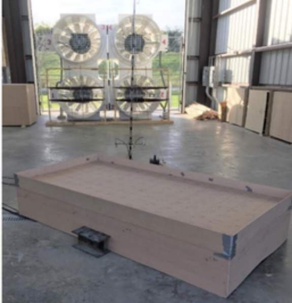
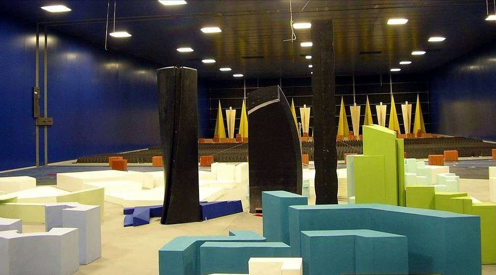

Large-scale open-jet testing
Most wind-tunnel tests use small models, typically 1:500 to 1:100 for large structures, in flows that lack the large, low-frequency eddies of real storms, which can understate the peak loads that damage roofs and cladding. The group's earlier studies identified geometric scale and inflow turbulence as key factors in that gap, which led to the LSU WISE open-jet facility (built in two phases): a wall-free jet with a 4 m by 4 m test section that reproduces complete atmospheric boundary-layer turbulence at Reynolds numbers up to 2.3 × 106, depending on the test model, with integral length scales about ten times those of conventional small-scale testing. It supports testing of buildings, solar arrays and other renewable energy installations, wind turbines, bridges, and power transmission lines.
What we found
- Velocity spectra agree well with established formulations, showing both small and large eddies, and surface pressures agree closely with full-scale field data while running 25–300% higher than small-scale tests (Physics of Fluids, 2024).
- On a 1:50 high-rise model, mean cladding pressures matched conventional wind-tunnel values while peak pressures ran higher (ASCE Journal of Structural Design and Construction Practice, 2022).
- Large-scale tests of the Silsoe cube introduced open-jet testing as a tool for structural wind engineering (Engineering Structures, 2022).
- Parapets change roof pressures on low-rise and large industrial buildings, with proposed modifications to ASCE pressure coefficients (Engineering Structures, 2021; Advances in Aerodynamics, 2021; Architectural Science Review, 2023).
Also in this area
Boundary-layer wind tunnel testing; the effect of model scale and inflow turbulence on peak loads (Solar Energy, 2016); internal pressures in buildings with openings and sudden breaching (Wind and Structures, 2013); wind-induced response of tall buildings by pressure integration (Alexandria Engineering Journal, 2013); aerodynamic and aeroelastic wind tunnel studies of Milan's CityLife towers at Politecnico di Milano; and wind-tunnel and full-scale tests of trees for vegetated building envelopes (Wind and Structures, 2013).
In pictures
